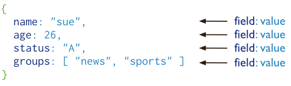
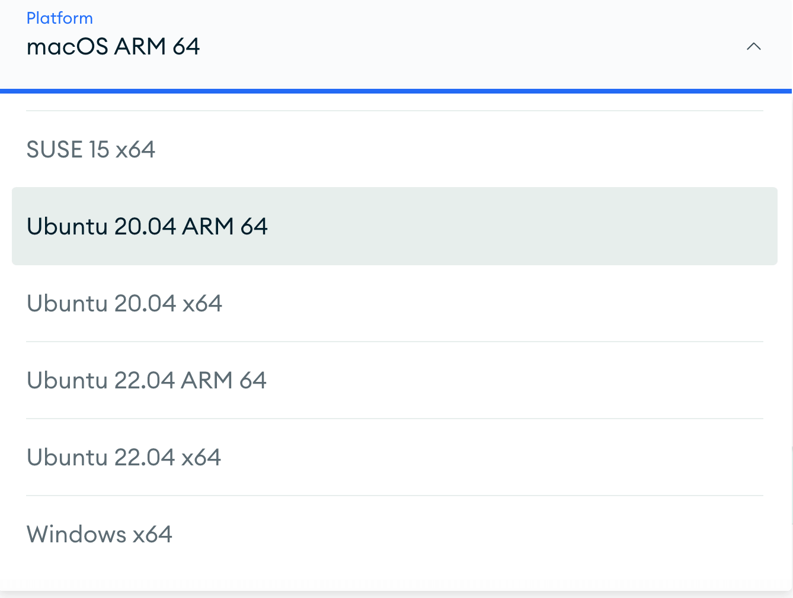

MongoDBとは？
MongoDBはドキュメント型データベースであり、データはJSONに似たドキュメント形式で保存されます。
MongoDBの設計理念は、大容量データ、高性能、柔軟性のニーズに対応することです。
MongoDBはコレクション（Collections）を使用してドキュメント（Documents）を整理し、各ドキュメントはキーと値のペアで構成されています。
- データベース（Database）：データを格納するコンテナであり、リレーショナルデータベースにおけるデータベースに似ています。
- コレクション（Collection）：データベース内のコレクションであり、リレーショナルデータベースにおけるテーブルに似ています。
- ドキュメント（Document）：コレクション内のデータレコードであり、リレーショナルデータベースの行（row）に似ていて、BSON形式で保存されます。
MongoDBはデータをドキュメントとして保存します。データ構造はキーと値のペア（key=>value）で構成され、ドキュメントはJSONオブジェクトに似ています。フィールド値には他のドキュメント、配列、ドキュメント配列を含めることができます：

主な特徴
-
ドキュメント指向のストレージMongoDBはドキュメント指向のデータベースであり、JSONライクな形式でデータを保存するため、データ構造がより柔軟で豊富になります。
-
インデックスによるクエリ最適化MongoDBはユーザーがドキュメント内の任意の属性にインデックスを作成することを許可します。例えば
FirstName和Address、これによりクエリ効率と並べ替え性能が向上します。 -
データレプリケーションと拡張性ローカルまたはネットワーク経由でデータのコピーを作成することにより、MongoDBは強力なデータ冗長性と拡張能力を実現します。
-
水平スケーリングとシャーディング増加する負荷に対して、MongoDBはシャーディング技術を使用してデータをコンピュータネットワーク内の他のノードに分散し、水平スケーリングを実現できます。
-
強力なクエリ言語MongoDBはJSON形式のクエリ構文を使用し、埋め込みオブジェクトや配列に対するクエリを含む複雑なクエリ式をサポートします。
-
データ更新：を利用して
update()コマンドにより、MongoDBはドキュメント全体を置き換えたり、指定したデータフィールドを更新したりでき、柔軟なデータ更新方法を提供します。 -
MapReduce バッチ処理MongoDBのMapReduce機能は大規模データ処理と集計操作のために設計されており、Map関数の
emit(key, value)呼び出しとReduce関数の論理処理により、効率的なデータ集計を実現します。 -
MapReduce スクリプト作成Map関数とReduce関数はJavaScriptで記述され、
db.runCommand或mapreduceコマンドを使用してMongoDB内で実行できます。 -
GridFS 大容量ファイルストレージGridFSはMongoDBに組み込まれた機能であり、画像や動画など、BSONドキュメントのサイズ制限を超えるファイルの保存と取得に使用されます。
-
サーバーサイドスクリプト実行MongoDBはサーバー側でJavaScriptスクリプトを実行することを許可し、サーバー側で直接実行したり、後で呼び出すための関数定義を保存したりする機能を提供します。
-
多言語サポートMongoDBはRUBY、PYTHON、JAVA、C++、PHP、C#など、さまざまなプログラミング言語をサポートしています。
-
簡単なインストールMongoDBのインストールプロセスはシンプルで直感的であり、ユーザーは迅速にデプロイして使用できます。
歴史
| バージョン | リリース日 | 機能説明 |
|---|---|---|
| 1.0 | 2009年8月 | 各コレクションにおけるインデックスの増加 より高速なインデックス作成 |
| 1.2 | 2009年12月 | Map/Reduce 保存されたJavaScript関数 設定可能なfsync時間 いくつかの小さな機能と修正 |
| 1.4 | 2010年3月 | 本番環境対応のシャーディング |
| 1.6 | 2010年8月 | レプリカセット IPv6サポート |
| 1.8 | 2011年3月 | |
| 2.0 | 2011年9月 | |
| 2.2 | 2012年8月 | 強化された地理空間サポート V8 JavaScriptエンジンへの切り替え |
| 2.4 | 2013年3月 | セキュリティ強化 テキスト検索（ベータ） ハッシュインデックス 集計の強化 テキスト検索の統合 |
| 2.6 | 2014年4月8日 | クエリエンジンの改良 新しい書き込み操作プロトコル セキュリティ強化 WiredTigerストレージエンジンのサポート プラグ可能なストレージエンジンAPI |
| 3.0 | 2015年3月3日 | SCRAM-SHA-1認証 改良されたexplain機能 MongoDB Ops Manager レプリカセット選挙の強化 WiredTigerストレージエンジンをデフォルトに |
| 3.2 | 2015年12月8日 | 構成サーバーをレプリカセットとして 読み取りconcern V8からSpiderMonkeyへの切り替え 線形化可能な読み取りconcern |
| 3.4 | 2016年11月29日 | ビュー 照合順序（collation） |
| 3.6 | 2017年11月 | |
| 4.0 | 2018年6月 | トランザクション |
| 4.2 | 2019年8月 | |
| 4.4 | 2020年7月 | |
| 4.4.5 | 2021年4月 | |
| 4.4.6 | 2021年5月 | 将来を見据えたバージョン化API |
| 5.0 | 2021年7月13日 | クライアント側フィールドレベル暗号化 リアルタイム再シャーディング 時系列データのサポート |
| 6.0 | 2022年7月 | |
| 7.0 | 2023年8月15日 |
MongoDB ダウンロード
MongoDB公式サイトからインストールパッケージをダウンロードできます。アドレスは次のとおりです：https://www.mongodb.com/try/download/community。
MongoDBは以下のプラットフォームをサポートしています：
Linux：MongoDBはUbuntu、Debian、CentOS、Red Hat Enterprise Linux（RHEL）、Fedoraなど、さまざまなLinuxディストリビューションをサポートしています。
Windows：MongoDBはWindows OS向けの公式バージョンを提供しており、Windows ServerおよびWindowsデスクトップOS上で実行できます。
macOS：MongoDBはmacOS上で実行でき、macOS向けの公式インストーラーも提供されています。
Docker：MongoDBはDockerコンテナとしても実行でき、さまざまなプラットフォームでのMongoDBのデプロイと管理がより便利になります。

言語サポート
MongoDBには以下の公式ドライバがあります：
MongoDB ツール
MongoDBに使用できる管理ツールがいくつかあります。
モニタリング
MongoDBはネットワークおよびシステム監視ツールMuninを提供しており、MongoDBのプラグインとして適用されます。
GangilaはMongoDBの高性能システム監視ツールであり、MongoDBのプラグインとして適用されます。
GUIベースのオープンソースツールCactiは、CPU負荷やネットワーク帯域幅の使用率を確認するためのもので、MongoDBを監視するプラグインも提供しています。
GUI
- Fang of Mongo – Webベースで、DjangoとjQueryで構成されています。
- Futon4Mongo – CouchDB FutonウェブのMongoDBのクローン版です。
- Mongo3 – Rubyで書かれています。
- MongoHub – OSX向けアプリケーションです。
- Opricot – ブラウザベースのMongoDBコンソールで、PHPで作成されています。
- Database Master — Windows向けMongoDB管理ツール
- RockMongo — 最高のPHP言語によるMongoDB管理ツールで、軽量で多言語をサポートしています。
MongoDB 導入事例
以下に、いくつかの企業におけるMongoDBの実際の導入事例を示します：
- CraiglistはMongoDBを使用して、数十億件のレコードをアーカイブしています。
- FourSquareは、位置情報ベースのソーシャルネットワーキングサイトで、Amazon EC2のサーバー上でMongoDBを使用してデータを共有しています。
- Shutterflyは、インターネットベースのソーシャルおよびパーソナル出版サービスであり、MongoDBを使用して様々な永続的データストレージの要件に対応しています。
- bit.lyは、WebベースのURL短縮サービスであり、MongoDBを使用して自社のデータを保存しています。
- spike.comはMTVネットワークの関連会社であり、spike.comはMongoDBを使用しています。
- Intuitは、小規模企業や個人向けのソフトウェアおよびサービスプロバイダーであり、小規模企業向けにMongoDBを使用してユーザーデータを追跡しています。
- sourceforge.netは、オープンソースソフトウェアを無料で検索、作成、公開するリソースサイトであり、MongoDBをバックエンドストレージとして使用しています。
- etsy.comは、手作り品を売買するウェブサイトであり、MongoDBを使用しています。
- ニューヨーク・タイムズは、主要なオンラインニュースポータルの一つであり、MongoDBを使用しています。
- CERNは、有名な素粒子物理学研究所であり、欧州原子核研究機構の大型ハドロン衝突型加速器のデータにMongoDBを使用しています。
クリックしてメモを共有
ノートは本記事の内容の拡張である必要があります！
記事投稿は、こちらをクリック
登録招待コードの入手方法
ノートを共有する前にログインしてください！
登録招待コードの入手方法